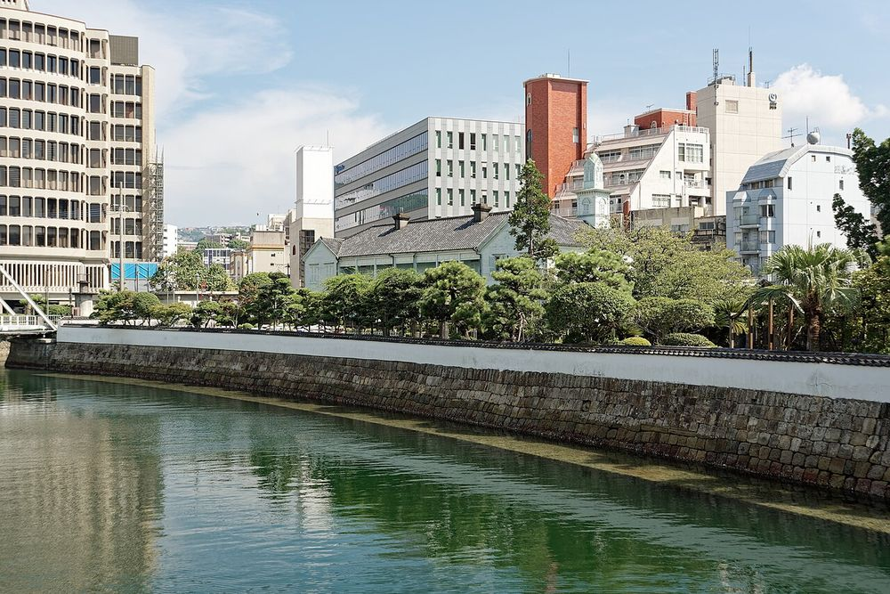
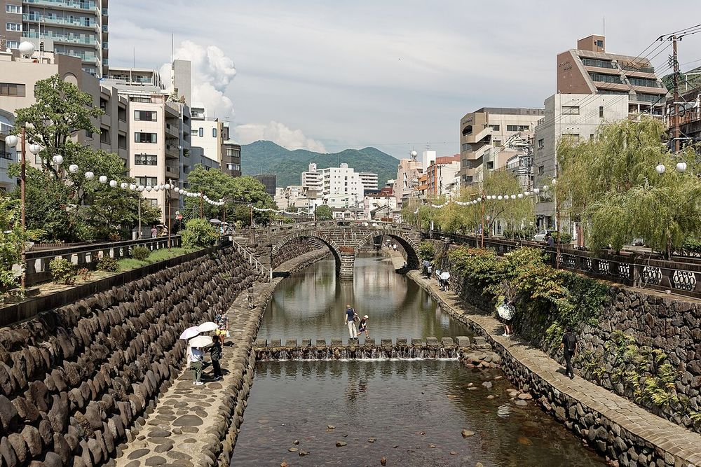

Kyushu Ceramics and Nagasaki Road Trip
Four days by car from Fukuoka: the Kyushu National Museum, the porcelain towns of Arita and Imari, an onsen night in Takeo, two days in Nagasaki and the pottery town of Karatsu.
Researched November 2026 for a December trip, and cross-checked with a second research tool. Hours and prices change, so check before you go. Drive times are estimates; confirm in Google Maps. Exchange rate ¥1 ≈ CNY 0.042 (26 Nov 2026).

Why ceramics and Nagasaki
For museum and craft lovers: a national museum, porcelain still fired in the hills where it began four centuries ago, and Nagasaki, where Dutch, Chinese and hidden-Christian history sit a tram ride from a Kengo Kuma art museum. No drive is longer than an hour and a half.
In December: cool, about 6–13°C, mostly dry, windy on the coast. Quiet before the year-end rush. The Kyushu National Museum’s Himiko exhibition runs to 11 Jan, and Nagasaki’s art museum shows Yuji Saiga’s Gunkanjima photographs. The Kyushu Ceramic Museum is between exhibitions until 23 Dec, and there are no night illuminations in Takeo this month.
Best time to go: October to November is best: mild, dry and the porcelain towns at their prettiest, with Nagasaki’s Kunchi festival in early October. Arita’s huge pottery fair around Golden Week is a highlight but very crowded, so go on its first days, before the holiday weekend. December is quiet and fine for museums. Avoid the early June to mid-July rainy season (Nagasaki is one of Japan’s wettest cities) and the August heat.
The route: Fukuoka Airport → Dazaifu → Arita → Takeo Onsen → Nagasaki (2 nights) → Ōkawachiyama → Karatsu → Fukuoka Airport. 4 days and about 385 km by car.
Highlights
- The Kyushu National Museum’s Himiko and Her Mirrors, in Kiyonori Kikutake’s glass wave
- Takeo: the hidden zodiac carvings in Tatsuno Kingo’s gate, and the Takeo City Library
- Nagasaki: Kengo Kuma’s art museum, Dejima, Ōura Cathedral (UNESCO) and Glover Garden
- Ōkawachiyama, the hidden valley of the Nabeshima clan’s kilns, and Karatsu’s pottery studios
- Nagasaki food: champon, toruko rice and a shippoku banquet
Good to know
- Most museums here close on Mondays. This plan is built for a Friday-to-Monday trip so nothing important falls on the Monday.
- Inasayama’s summit road is closed to cars on weekend evenings: use a hotel shuttle or the free loop bus.
- Gunkanjima landings often fail in December wind, so treat the cruise as optional.
- Days 1, 2 and 4 are full: keep to the timings below.
Two ways to do it
💰 Best value
- Stay: Kyotoya in Takeo Onsen (¥21,400 (CNY 890) a night, room only), then two nights at Hotel Belleview Nagasaki Dejima (¥14,000 (CNY 590) a night; free shuttle to the Inasayama ropeway).
- Eat: Ide Chanpon, toruko rice at Tsuruchan, and shippoku at Hamakatsu.
- About CNY 3,230–4,060 per person excluding flights.
✨ Best experience
- Stay: Hotel Kasuien in Ureshino (¥39,000 (CNY 1,630) for two with kaiseki dinner and breakfast; splurge: Taishoya, ¥79,200 (CNY 3,310)), then Hotel Indigo Nagasaki Glover Street (¥32,000 (CNY 1,340) a night), beside Ōura and Glover.
- Add: a Gunkanjima cruise, shippoku at the historic Kagetsu ryōtei, and a live-squid lunch at Yobuko.
- About CNY 5,180–6,380 per person excluding flights.
Same route and days for both; only hotels, meals and extras change.
Route map
● numbered: overnight stops in order ● stop on a drive day (lunch or sight). Tap a point for its days. ✈️ airport. Lines follow roads from OpenStreetMap routing and are approximate.
Itinerary
🚗 Fukuoka Airport → Dazaifu · 19 km · about 40 min
Kyushu National Museum (allow 2–2.5 h; Himiko ¥2,000 (CNY 85)), then Dazaifu Tenmangu and its Treasure House (¥500 (CNY 20)). Lunch on the shrine approach.
🚗 Dazaifu → Arita · 91 km · about 1h30
Kyushu Ceramic Museum (free; last entry 16:30) as a short stop: the Arita history gallery and the Shibata Collection. Skip it if you leave Dazaifu after 15:00.
🚗 Arita → Takeo Onsen · 17 km · about 25 min
🚗 Takeo → Nagasaki · 69 km · about 1h05
Nagasaki Prefectural Art Museum by Kengo Kuma (open to 20:00; closed on its 2nd and 4th Mondays, so see it today), its rooftop garden, then Dejima (open to 21:00). Evening: the Inasayama night view by hotel shuttle or the free loop bus.
Optional: a morning Gunkanjima cruise instead of the temples. Confirm it on the morning, with Dejima and the Museum of History and Culture as the fallback.
🚗 Nagasaki → Ōkawachiyama · 76 km · about 1h25
Ōkawachiyama, the Nabeshima kiln village (Nabeshima-yaki Kaikan is open daily; individual kilns close irregularly), about 10:00–11:15.
🚗 Ōkawachiyama → Karatsu · 31 km · about 35 min
Lunch, then two of: Karatsu Castle, the Hikiyama float hall, the Nakazato Tarōemon kiln (closed Wednesdays and Thursdays). Or swap them for a live-squid lunch at Yobuko (adds about 2 hours).
🚗 Karatsu → Fukuoka Airport · 61 km · about 1h
Return the car by 16:00 for an evening flight.
Rain or strong wind: keep the indoor sights (art museum, Dejima, the Museum of History and Culture) for the wet day and Glover for the dry one.
Without a car
- Hakata → Nagasaki: Relay Kamome, changing at Takeo-Onsen to the Nishi-Kyushu Shinkansen, about 1h20, ¥6,490 (CNY 270) reserved. Takeo-Onsen is on the way, so you can stop off.
- Arita and Karatsu are on JR local lines (Arita from Takeo-Onsen; Karatsu directly from Fukuoka’s subway on the Chikuhi line). Ōkawachiyama needs a taxi from Imari.
- Easiest: stay in Fukuoka and see Nagasaki as a day trip. See our Fukuoka art guide.
Top sights






- Kyushu National Museum, Dazaifu: Japan’s fourth national museum, on cultural exchange with Asia; 9:30–17:00, closed Mondays.
- Dazaifu Tenmangu: the great shrine of scholarship; grounds free, Treasure House ¥500 (CNY 20) (closed Mondays).
- Kyushu Ceramic Museum, Arita: the history of Arita and Imari porcelain; free; closed Mondays.
- Takeo Onsen Romon and the City Library: a red Tatsuno Kingo gate with hidden zodiac carvings; a library run with a bookshop and café.
- Nagasaki: the Prefectural Art Museum (Kengo Kuma, over a canal), Dejima (¥1,100 (CNY 45)), the Atomic Bomb Museum (¥200 (CNY 10)), Ōura Cathedral (¥1,000 (CNY 40)), Glover Garden (¥1,300 (CNY 55)), Kōfukuji and Sōfukuji (¥500 (CNY 20) each), and the Inasayama night view (ropeway ¥1,900 (CNY 80) return).
- Ōkawachiyama: about 30 kilns in the valley where the Nabeshima lords kept their official potters; free to walk.
- Karatsu: the castle (¥500 (CNY 20)), the 14 Kunchi festival floats (¥310 (CNY 15)), and the Nakazato Tarōemon kiln, the leading Karatsu-ware family.
On in December 2026
- Kyushu National Museum: Himiko and Her Mirrors: The Making of a Kingdom, 31 Oct–11 Jan, ¥2,000 (CNY 85). Open to 19:00 on Saturdays.
- Nagasaki Prefectural Art Museum: Hello Kitty, 17 Oct–11 Jan, ¥2,000 (CNY 85) including the collection; Yuji Saiga’s Gunkanjima photographs, 22 Oct–24 Jan and 28 Oct–7 Feb (collection ticket ¥420 (CNY 20)).
- Saga Prefectural Art Museum (about 35 minutes from Takeo, if you have time): a Studio Ghibli exhibition, 3 Nov–14 Feb, ¥1,900 (CNY 80); advance timed tickets only at weekends.
- Kyushu Ceramic Museum: the Kakiemon and Meissen exhibition ended 6 Dec; Galleries 3 and 4 reopen 23 Dec. Until then, only the permanent galleries.
- Not yet announced: Takeo City Library’s winter illumination (it ran from mid-December last year).
Museums
| Museum | Hours | Closed | Entry |
|---|---|---|---|
| Kyushu National Museum | 9:30–17:00 (Sat to 19:00 during Himiko) | Mondays | ¥2,000 (CNY 85) (special) |
| Dazaifu Tenmangu Treasure House | 9:00–16:30 | Mondays | ¥500 (CNY 20) |
| Kyushu Ceramic Museum, Arita | 9:00–17:00, last entry 16:30 | Mondays | Free |
| Takeo City Library | 9:00–21:00 | Open daily | Free |
| Nagasaki Prefectural Art Museum | 10:00–20:00 | 2nd and 4th Mondays | ¥420 (CNY 20); special ¥2,000 (CNY 85) |
| Nagasaki Atomic Bomb Museum | 8:30–17:30 | 29–31 Dec | ¥200 (CNY 10) |
| Dejima | 8:00–21:00 | Open daily | ¥1,100 (CNY 45) |
| Nagasaki Museum of History and Culture | 8:30–18:00 | Some Mondays (21 Dec) | ¥630 (CNY 25) |
| Ōura Cathedral | 8:30–17:30 | Church events | ¥1,000 (CNY 40) |
| Glover Garden | 8:00–20:00 in Nov–Dec | Open daily | ¥1,300 (CNY 55) |
| Karatsu Castle | 9:00–17:00 | 29–31 Dec | ¥500 (CNY 20) |
| Hikiyama float hall, Karatsu | 9:00–17:00 | 29–31 Dec | ¥310 (CNY 15) |
| Former Takatori Residence, Karatsu | 9:30–17:00 | Mondays | ¥520 (CNY 20) |
Where to eat
Tabelog 3.65 · 845 reviews badges are Tabelog scores: 3.0 is average, 3.5+ very good. Read from Tabelog search listings in late November 2026. Our bar is 3.4+ and 50+ reviews; anything below is marked.
Day 1
- Lunch: Kasanoya on the Dazaifu shrine approach Tabelog 3.65, set meals ¥1,500–2,500 (CNY 65–100), open daily. Or Sumiyaki Jidori Sanzō Tabelog 3.74, charcoal-grilled chicken around a hearth, about ¥2,500 (CNY 100) (closed Thursdays).
- Dinner: Takazushi, Ureshino Tabelog 3.60 · 924 reviews, seven-seat counter sushi, ¥5,000–6,000 (CNY 210–250) (closed Wednesdays; book). Or the ryokan’s kaiseki on the best-experience plan. Takeo itself has no dinner spot above our bar.
Day 2
- Lunch: Ide Chanpon Honten Tabelog 3.65 · 845 reviews, Saga’s famous vegetable-heaped champon, about ¥1,000 (CNY 40) (closed Wednesdays). Or Sōan Yokochō, Ureshino Tabelog 3.57, onsen “melting” tofu (closed Wednesdays).
- Dinner: Uodana Asa near Nagasaki Station Tabelog 3.55 · 306 reviews, a fish izakaya, ¥4,000–5,000 (CNY 170–210). Or Hiikiya Tabelog 3.34–3.55 · 55 reviews (borderline; closed Sundays).
Day 3
- Lunch: Tsuruchan Tabelog 3.62 · 785 reviews, Kyushu’s oldest café and home of toruko rice, ¥1,500–2,000 (CNY 65–85) (closed Wednesdays; no bookings). Or Yossō Honten Tabelog 3.49 · 1,400 reviews, chawanmushi and steamed sushi since 1866, about ¥2,500 (CNY 100) (closed Tuesdays).
- Dinner: shippoku, Nagasaki’s Japanese-Chinese-Dutch banquet: Nagasaki Shippoku Hamakatsu Tabelog 3.48 · 320 reviews, courses from ¥5,500 (CNY 230), open daily. Or Kagetsu Tabelog 3.60 · 140 reviews, a ryōtei founded in 1642, ¥23,760–26,400 (CNY 990–1,100) (at least two people; book).
- Snacks: castella at Shōōken or Fukusaya; kakuni manju at Iwasaki Tabelog 3.37 · 365 reviews (below our bar).
Day 4
- Lunch: Kameyama by Karatsu Station Tabelog 3.58, seafood bowls ¥1,000–2,000 (CNY 40–85). Or Kawatarō, Yobuko Tabelog 3.58 · 1,228 reviews, live squid about ¥3,500 (CNY 150) (open Mondays, closed Wednesdays).
- Dinner: at Fukuoka Airport before the flight: the international terminal’s restaurants, or Ramen Runway in the domestic terminal (¥1,000–1,500 (CNY 40–65); a shuttle bus links the terminals).
Shopping
- Arita: porcelain shops along the main street, and Arita Sera, a ceramics outlet mall.
- Ōkawachiyama: kiln showrooms, and Nabeshima-yaki Kaikan for pieces from 24 kilns.
- Karatsu: the Karatsu-ware cooperative showroom (Arpino 2F, by the station; closed Thursdays) and the kiln galleries.
- Nagasaki: castella from Shōōken (since 1681) or Fukusaya (since 1624); the Hamanomachi arcade; Chinatown.
Where to stay
Cheapest room for two, including taxes, seen on Booking.com in late November 2026 for a December weekend.
Kyotoya
8.5About ¥21,400 (CNY 890) a night. Room only on Booking.com, so eat out or book a half-board plan direct. Five minutes’ walk from the Romon gate.
Hotel Kasuien
8.2About ¥39,000 (CNY 1,630) a night with kaiseki dinner and breakfast, on the Ureshino river. 25 minutes from Takeo.
Hotel Belleview Nagasaki Dejima
8.1About ¥14,000 (CNY 590) a night. Car park ¥1,200 (CNY 50) a night (no tall vans); free shuttle to the Inasayama ropeway.
Hotel Indigo Nagasaki Glover Street
9.5About ¥32,000 (CNY 1,340) a night. Steps from Ōura and Glover; parking about ¥2,200 (CNY 90) a night, book ahead. No Inasayama shuttle.
Budget
Per person, two sharing a room and a car, excluding flights. Estimated November 2026. Exchange rate ¥1 ≈ CNY 0.042 (26 Nov 2026).
- 💰 Best value: about CNY 3,230–4,060 (hotels 1,030–1,180 · car hire, tolls, fuel and parking 810–1,200 · food 870–1,150 · entry fees 520)
- ✨ Best experience: about CNY 5,180–6,380 (hotels 2,150–2,470 · car hire, tolls, fuel and parking 810–1,200 · food 1,470–1,960 · entry fees and Gunkanjima 750)
Not included: flights, breakfasts other than the ryokan’s, ceramics shopping, travel insurance, and a 10–15% contingency.
Driving
- Foreign licences need a 1949 Geneva-type International Driving Permit (paper booklet), carried with the original licence. Toyota, Nippon (Hertz) and Times accept it at Fukuoka Airport.
- A compact car for 4 days costs about ¥25,000–40,000 (CNY 1,040–1,670). Ask for an ETC toll card.
- Skip the Kyushu Expressway Pass: tolls on this route come to about ¥5,800–7,400 (CNY 240–310), less than the 4-day pass at ¥10,600 (CNY 440).
- Nagasaki: leave the car at the hotel and use the tram (¥150 (CNY 5) a ride; day pass ¥600 (CNY 25)).
- Ice is rare in mid-December, but hill roads towards Imari can be frosty early: set off after 9:00 and check JARTIC. Sunset is about 17:15.
- Total driving: about 385 km over four days.
Sources
Checked 27 November 2026, then cross-checked with a second research tool; conflicting points were settled on official sites. Restaurant scores come from Tabelog search listings and may drift. Drive times are route-planner estimates. Hotel scores are Booking.com guest reviews out of 10. Everything here is summarised in our own words. How this research is done →
- Museums: Kyushu National Museum · Kyushu Ceramic Museum · Saga Prefectural Art Museum · Nagasaki Prefectural Art Museum · Atomic Bomb Museum · Museum of History and Culture
- Sights: Takeo Romon zodiac tour · Dejima · Ōura Cathedral · Glover Garden · Inasayama · Karatsu tourism · Former Takatori Residence · Nakazato Tarōemon
- Getting around: Kyushu Expressway Pass · NEXCO tolls · IDP rules · Nagasaki trams · Gunkanjima Concierge
- Food and stays: Tabelog search listings · Booking.com (prices and guest scores, late November 2026)
- Photos (Wikimedia Commons): see the credit under each image.